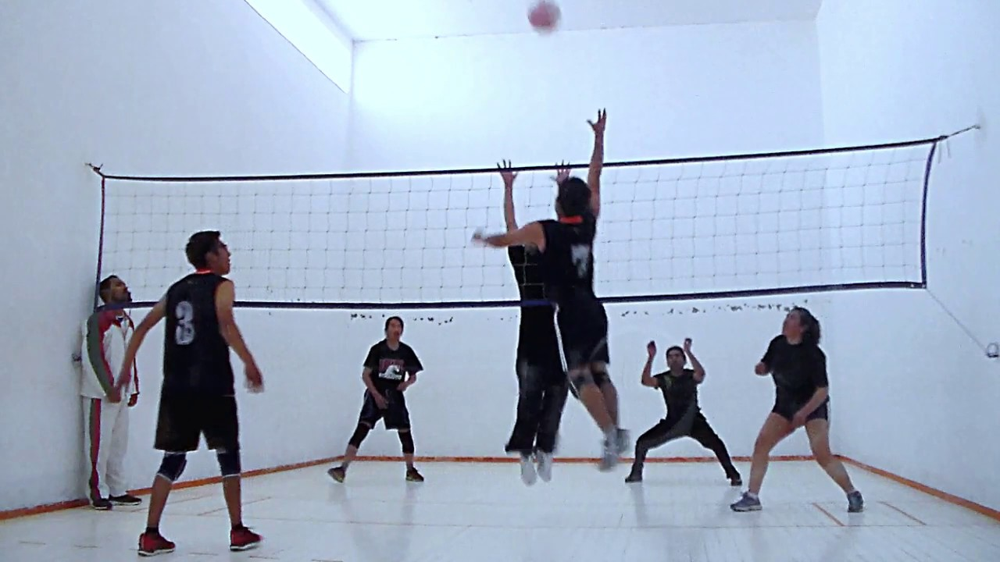
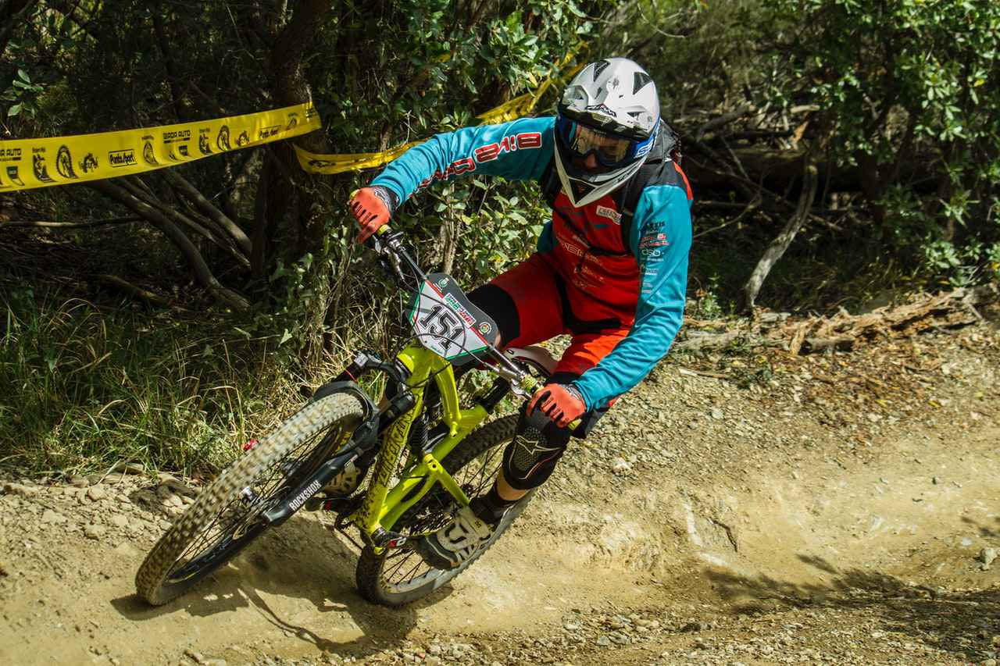

FootBall
En mi opinion es un deporte aburrido asi que no puedo decir mucho mas que esto.

Wally
Un deporte entretenido y que me gusta ya que no se necesita de muchos jugadores y las partidasa no se extienden por mucho tiempo.

Ciclismode montaña
A diferencia del ciclismo "normal" prefiero el siclismo de montaña ya qie solo eres tu y tu bicicleta contra el mundo, no dependes de otras personas para disfrutar de la experiencia.